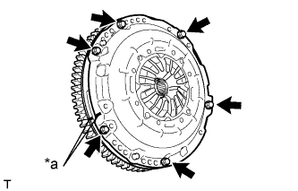
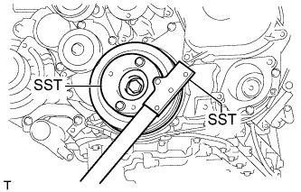
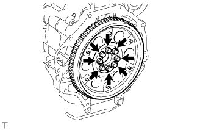
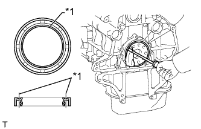

ЗАДНИЙ САЛЬНИК КОЛЕНЧАТОГО ВАЛА > СНЯТИЕ |
| 1. СНИМИТЕ МЕХАНИЧЕСКУЮ ТРАНСМИССИЮ В СБОРЕ (для моделей с механической трансмиссией) |
Снимите механическую трансмиссию (Нажмите здесь).
| 2. СНИМИТЕ АВТОМАТИЧЕСКУЮ ТРАНСМИССИЮ В СБОРЕ (для моделей с автоматической трансмиссией) |
Снимите автоматическую трансмиссию (Нажмите здесь).
| 3. СНИМИТЕ КОЖУХ СЦЕПЛЕНИЯ В СБОРЕ (для моделей с механической трансмиссией) |
|  |
Нанесите метки на кожух сцепления и маховик.
| *a | Метка |
Ослабьте все установочные болты, поочередно выворачивая их на один оборот, пока не ослабнет натяжение пружины.
Выверните 6 установочных болтов и снимите кожух сцепления.
| 4. СНИМИТЕ ВЕДОМЫЙ ДИСК СЦЕПЛЕНИЯ В СБОРЕ (для моделей с механической трансмиссией) |
| 5. СНИМИТЕ МАХОВИК В СБОРЕ (для моделей с механической трансмиссией) |
|  |
Удерживайте шкив коленчатого вала с помощью SST.
Выверните 8 болтов и снимите маховик.
| 6. СНИМИТЕ ВЕДУЩИЙ ДИСК КРЫЛЬЧАТКИ НАСОСА (для моделей с автоматической трансмиссией) |
Удерживайте шкив коленчатого вала с помощью SST.
|  |
Выверните 8 болтов и снимите заднюю распорную втулку ведущего диска, ведущий диск крыльчатки насоса и маховик с коронной шестерней.
| 7. СНИМИТЕ ЗАДНИЙ САЛЬНИК КОЛЕНЧАТОГО ВАЛА |
|  |
С помощью ножа обрежьте кромку заднего сальника коленчатого вала.
| *1 | Место среза |
С помощью отвертки извлеките задний сальник коленчатого вала.